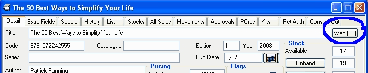
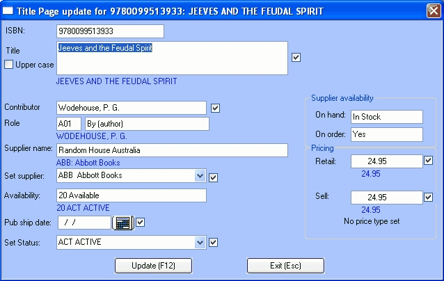
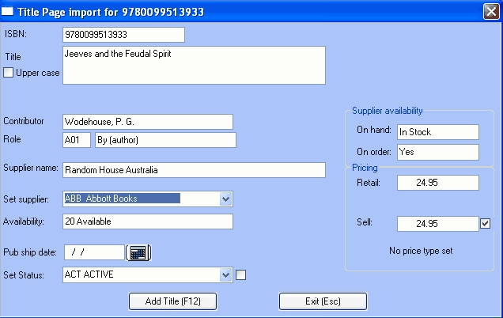

There is a service provided for Title Page subscribers that allow the use of the Title Page API, which enables a more automated way of retrieving data from their service without manually opening their website.
Title Page Limitations
There is a limited amount of information that this Title Page (API) service will search and retrieve:
| · | Searching: You can only search the Title Page (API) using ISBN13. There is currently no Embedded, Title or Author type searching.
|
| · | Data fields retrieved: Title, Author, Author Role, Supplier, Status, Price, Supplier Stock Level, Supplier Order Level, Publisher Ship Date.
|
Notes
| · | As listed, this service does not retrieve all the data that would normally come in from an ONIX file downloaded from Title Page website. This is a limitation on Title Page's side. We are retrieving everything available. If you wish to use Bookscan as a springboard to your website, with jacket images and the like, it would be best to use Nielsen Bookdata, ONIX files from suppliers or Title Page's website as your primary source of data, as they contains more data.
|
| · | Title page's Supplier Order Level and Supplier Stock level fields do not get saved into Bookscan, but will be visible when using this Title Page API through Bookscan.
|
| · | Title page's Supplier field, just as in the ONIX import window, does not automatically link with the suppliers contained in your own Supplier Master. You will need to do the linking up yourself (as will be explained below).
|
Setup
Before you can use the Title Page API features in Bookscan, you will first need to ensure your account with Title Page has this feature enabled. It is not enabled by default and you have to contact Title Page to enable it. We've no idea why!
Open the Titles tab of System Options and click on the Title Page Set Up button. Enter your Title Page Username and Password and save them.
Updating Existing Titles
This method of updating can be done anywhere throughout the program where you can view the Title Master. It is used to update price and availability
Open the Title Master and display the Details tab.

Click on the Web (F9) button.
The Web Search window will open.

| · | Ensure that Title Page (F6) is selected and click the Login (F12) button. Bookscan will attempt to log in to the Title Page web site.
|
| · | A normal course of it running will show these messages (in order);
|
| § | Connecting to Title Page
|
| § | Requesting data for: (ISBN)
|
| § | Success!: data found for : (ISBN)
|
| · | If you don't succeed in logging in, the window will show 'failed' and a detailed failure message will display.
|
| · | If the log in succeeds, Bookscan will retrieve an update file for the title and the Title Page Update window will open:
|

| · | The fields coloured blue display what is currently in your master file. The fields coloured black are from Title Page except the Set supplier field which displays your current primary supplier.
|
| · | Clicking the Update (F12) button will cause the program to overwrite this fields that display a tick against them.
|
| · | To stop a field from updating, click on the tick to remove it.
|
Title
If the checkbox beside the Title field is checked, the master file title field will be updated. Ticking the 'Upper case' checkbox will cause it to save in upper case.
Contributor:
If the checkbox beside the Author field is checked, the Author field in the Title Master will be updated. The Role field is the role the contributor plays with this product. The field next to it is the description of that role. A01 is (principal) author. If the incoming contributor role is not this, you may choose to not update the Author field.
Supplier
Title page's Supplier field can't be mapped to Bookscan's supplier master. You will need to do the linking up yourself.
The Supplier Name field shows the supplier as recorded by Title Page. The blue field below it shows the primary supplier in your master file.
The Set Supplier combo box will also default to the Bookscan supplier. It's here that you can manually set the Bookscan supplier to be the same as the Title Page supplier.
Status
The Availability field displays the ONIX status as recorded by Title Page. The blue field below it shows the status in your master file. If you have mapped your status fields to Onix fields (or if your statuses use the Onix standard), the Set Status combo box will default to the Title Page status. If you haven't done the mapping you will need to set the Status field manually.
Publisher shipping date
If the publisher/distributor is out of stock and have nominated an expected shipping date, it will be displayed in the Pub Ship Date field. This will update the corresponding field in the title master.
Pricing
The Sell Price and Retail Price fields display the Title Page (Australian) prices with the master file price in blue, beneath them. The master file prices will update when you click the Update (F12) button. If you wish, you can manually key a different Sell or Retail price in these fields, or un-tick the checkboxes to cause the prices not to update.
Note: Below the Retail field is the price type for the Title Page prices. Standardly, the prices are 'retail price including tax'. If it is something other than this, you will need to take it in consideration when updating.
Supplier Availability
This information is for information only; the data is not imported into Bookscan.
| · | On hand – indicates whether the supplier has stock.
|
| · | On order - indicates if the supplier (Yes/No) has stock on order.
|
Adding new titles using the Title Page API
Title Master
If an ISBN search in the Find Title window fails to find a product in the master file, the program will open the Web Search window from where you can search the TitlePage web site for the product.
| · | In the Web Search ensure the Title Page radio button is selected and click the Log in (F12) button.
|
| · | The Title Page login window will display. Bookscan will attempt to log in to the Title Page web site.
|
| · | A normal course of it running will show these messages (in order);
|
| § | Connecting to Title Page
|
| § | Requesting data for: 9781841593067
|
| § | Success!: data found for : 9781841593067
|
| · | If you don't succeed in logging in, the window will show 'failed' and a detailed failure message will display.
|
| · | If the log in succeeds, Bookscan will retrieve an update file for the title and the Title Page Update window will open:
|

Note that the window is slightly different from the update window shown earlier – the only optional import fields are the status and sell price.
Notes
| · | The ISBN, Title, Author and Retail fields will always be imported to the master file.
|
| · | Note that you can overtype these fields in the window if you wish.
|
| · | Ticking the 'Upper case' checkbox will cause the title to save in upper case.
|
| · | The Role field is the role the contributor plays with this product. The field next to it is the description of that role. A01, for example, is (principal) author.
|
Supplier
Title page's Supplier field can't be mapped to Bookscan's supplier master. You will need to do the linking up yourself. The Supplier Name field shows the supplier as recorded by Title Page. The Set Supplier combo box will be empty. It's here that you can manually set the Bookscan supplier to be the same as the Title Page supplier.
Status
| · | The Availability field displays the ONIX status as recorded by Title Page.
|
| · | If you have mapped your status fields to Onix fields (or if your statuses use the Onix standard), the Set Status combo box will default to the Title Page status.
|
| · | If you haven't the field will be blank and you will have to set the Set Status field manually.
|
| · | Unticking the checkbox to the right of the Set Status field, will prevent the master status from being updated.
|
Publisher shipping date
If the publisher/distributor is out of stock and have nominated an expected shipping date, it will be displayed in the Pub Ship Date field. This will update the corresponding field in the title master.
Pricing
The Sell Price and Retail Price fields display the Title Page (Australian) price. Unticking the checkbox to the right of the Sell Price field, will prevent the master sell price from being updated.
Note: Below the Retail field is the price type for the Title Page prices. Standardly, the prices are 'retail price including tax'. If it is something other than this, you will need to take it in consideration when updating.
Supplier Availability
This information is for information only; the data is not imported into Bookscan.
| · | On hand – indicates whether the supplier has stock.
|
| · | On order - indicates if the supplier (Yes/No) has stock on order.
|